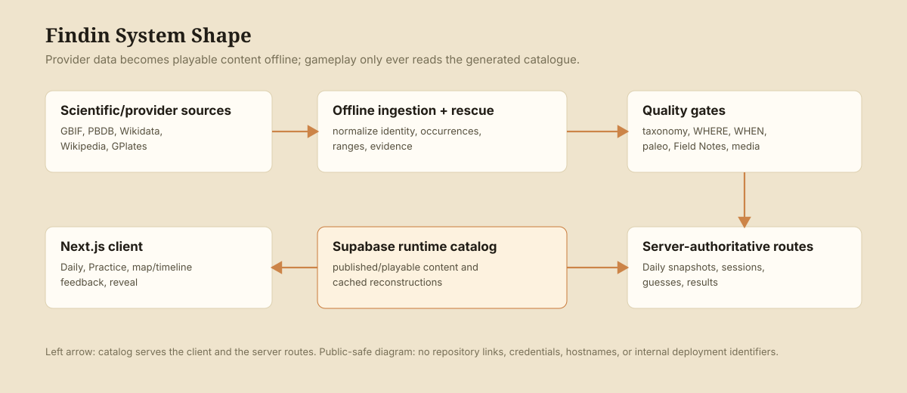

Recruiter-safe case study
Findin
A WHERE and WHEN guessing game for living and extinct animals, built around reproducible daily puzzles and cautious scientific content handling.

Product
A browser game where players infer where an animal lived and when it existed.
State
Live at findin.world; the older documented Railway URL was retired and now 404s.
Runtime
Next.js, React, TypeScript, Supabase/Postgres, PostHog, Vitest.
Data
Provider evidence is staged, normalized, scored, and gated before it can become Daily or Practice content.
Why I Built It
"Where" should also mean "when."
Regular geography games stop at the present. I wanted a version where "where" also means "when" — where paleogeography, deep time, and species-occurrence evidence turn a guessing game into something that teaches you the planet has looked very different before.
The Product
What the player does.
A player starts with evidence about an animal without being given the answer. They make a WHERE guess on a map, then make a WHEN guess on a geological time bar. Once both parts are complete, the app can reveal the animal and explain the answer.
The product idea is simple on purpose: the engineering work is in making those clues, maps, dates, and results trustworthy enough that the game can teach rather than merely decorate.
Architecture
Provider data becomes playable content.

Systems
What I built.
- Server-authoritative Daily sessions and scoring
- CI on every push: typecheck, lint, tests, build, and a production-dependency audit
- A launch security pass: tighter row-level security and API boundaries, including locking down profile exposure
- Practice mode using the published/playable catalog
- Daily snapshots for reproducible puzzle state
- Hard no-repeat Daily rotation before balancing
- GBIF, PBDB, Wikidata, Wikipedia, and GPlates-oriented ingestion paths
- Supabase migrations for content lifecycle, source records, paleo cache, and leaderboards
- Quality gates for identity, taxonomy, geography, time, paleo support, media, Field Notes, and recognizability
- PostHog instrumentation through a typed event catalog, with win/loss events fired from the game's real solved state
- Mobile-friendly map and timeline pickers, plus creature-image retry and preload before an image is given up on
- SEO and AI-discovery metadata served from the canonical custom domain
Data
Why the pipeline exists.
Findin does not treat "found a provider record" as the same thing as "safe to put in front of players." The code distinguishes discovered, review-required, Practice-ready, and Daily-ready content. Daily eligibility currently requires published/playable rows plus quality thresholds and a defensive in-process readiness check.
That defensive posture shows up throughout the repo: source records for provenance, explicit content states, Field Notes validation, common-name checks, provider confidence labels, media/license handling, and hard failures for broad or ambiguous evidence when it would make a WHEN answer misleading.
Paleogeography
Ancient animals are not just modern dots.
For extinct animals with cached reconstruction data, gameplay can render a paleogeographic coastline and use reconstructed fossil coordinates for WHERE scoring. The GPlates path is intentionally offline: ingestion prepares cache rows, while gameplay routes read only from the cache and fall back instead of making live scientific API calls.
The globe interaction exists in the product as an experimental surface; the production-safe case-study claim is narrower: the map/timeline Daily flow is real, and paleo cache support is implemented with fallback behavior.
Daily
Reproducible game state.
A Daily puzzle has to be identical for every player on that day and stay stable across refreshes, deploys, and future content edits. Findin resolves a puzzle server-side, stores the assignment, freezes an animal snapshot, and reconstructs score state by replaying persisted guesses through the same pure game engine used locally.
The rotation layer hard-excludes animals already used in the current deck before balancing runs. That makes no-repeat behavior a structural rule rather than a preference that weighted randomness can override.
Data + Verification
Live from CI where possible, dated where not.
Values with a dotted underline are read live from the project's CI and launch manifest when this page loads. Everything else is a snapshot, dated below.
350
tests passing in CI
58
test files
60
species reviewed & verified for the launch manifest
31
static pages generated by the production build
CI runs typecheck, lint, tests, the production build and an audit of production dependencies on every push; the latest run on the default branch passed (29 September 2026). Test and build figures were refreshed on 2 October 2026.
Content catalogue, snapshot from 16 September 2026 and not refreshed since: 578 total candidates (282 prehistoric, 296 modern), of which 80 were published/playable and 493 review-required. The pipeline has kept running, so treat these as a floor on the work, not the current count.
Decisions
Engineering trade-offs.
Reproducibility
Persist a Daily puzzle row with a frozen animal snapshot.
Problem: gameplay needs stable answers even when animal records improve later. Trade-off: older puzzle snapshots can become historically stale, but a player never sees the answer move underneath them.
Content pipeline
Run ingestion, rescue, validation, and editorial staging offline.
Problem: provider data is inconsistent across living and extinct animals. Trade-off: content growth is slower, but gameplay stays fast and reproducible instead of calling providers during play.
Paleogeography
Cache GPlates-derived coastlines and fossil coordinates ahead of time.
Problem: extinct animals should not be judged only against modern geography. Trade-off: unsupported ages fall back to the modern map rather than making live scientific API calls from the game.
Daily rotation
Hard no-repeat rotation, then score the remaining candidates.
Problem: random Daily selection can repeat or overuse weak content. Trade-off: the eligible pool has to be healthy; when it's small, the planner prioritizes correctness over variety.
Current Limitations
What this is not yet.
- Not presented here as a public launch with proven traction, even though it is live and playable.
- The older documented Railway URL is retired and now 404s; findin.world is the current live deployment.
- Rate limiting depends on external Upstash configuration; not independently re-verified this pass.
- PostHog event arrival still needs owner-dashboard confirmation.
- As of the 16 September snapshot, of 578 total content candidates, 80 were published/playable and 493 review-required — the stricter Daily-ready pool is smaller still, a product constraint rather than a number to inflate.
- The globe view is an experimental surface, not the production-safe claim; the map/timeline flow is what's verified as real.
What This Demonstrates
Turning messy scientific data into something that has to be right.
Findin required treating "the data provider said so" as a starting point, not an answer — building offline ingestion, validation, and quality gates so a wrong or ambiguous record can't quietly become a puzzle. It also required server-authoritative game design (a Daily puzzle that can't be re-derived differently after the fact), and being explicit about which surfaces are production-safe versus experimental rather than presenting everything as equally finished.
Evidence
Verification notes.
Claims on this page were checked against the local Findin repository and the live findin.world deployment on September 16, 2026 (test, build and launch-manifest figures refreshed October 2, 2026 from the latest passing CI run and the manifest): package scripts, Supabase migrations, game routes, planner code, content pipeline scripts, tests, phase reports, git history, `railway status`, and browser renders of both the local and live Daily gameplay.
Stronger claims about original motivation, exact collaboration model, public repo visibility, production traffic, and real user outcomes stay out until confirmed directly by the owner.